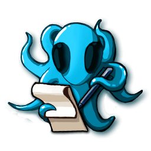
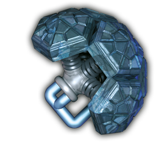

Alien Technologies
Alien Technologies is the big fresh expansion for Galaxy Trucker. Alien Technologies offer you interesting single player missions, as well as many new elements for your online, custom, and pass & play games.

SINGLE-PLAYER MISSIONS
Each mission has three difficulty levels. After completing first difficulty level, you may continue to another difficulty, or continue to next mission.

NEW SHIPS
Random Ship Design

Random ship design is created randomly at the start of the flight. Thus, each time you start such a flight, you will get a different shape to work with.
The shape is always symmetric.
Note that your opponents have the same ship design as you.
Random Ship Choice

At the start of the flight, you can pick one of three random ship designs with symmetric shapes.
Note that your opponents have the same options as you, but may pick different ship designs than you had.
Organic Ship

Organic ship plan grows as you build it. Whenever any trucker welds any component, ship plans of ALL truckers expand (new slots are added where the connectors point).
However, the total number of possible ship slots is still limited. You can see the current number of ship slots left above your ship. Once there are none left, ship plans may no longer expand.

Amoeba Ship

A ship with shape generated randomly at the beginning of the building. Its design is usually very asymmetrical and also contains some holes. All these features are admired by certain alien races.
NEW CARDS
Junkyard

In the junkyard, truckers can exchange resources or events for other resources, cargo, or credits.
Black Hole

To escape the black hole, you need your engine strength to match or exceed the black hole’s strength.
If you can’t match the black hole’s strength, you can still escape by giving up two of your ship components, for each point of strength difference.

Space Billiards

Each player chooses a row of meteors and ANY opponent (drag an arrow from the card row and release it on opponent’s avatar on the right side of the screen). The opponent defends against those meteors.
One player may have to defend against multiple rows of meteors.
NEW COMPONENTS
Combined Tiles

As the name implies, combined tiles combine either one cargo type with batteries or both cargo types.
Bi-Directional Cannon

The bi-directional cannon needs to be powered by a battery  . Its strength equals to the sum of both barrels.
. Its strength equals to the sum of both barrels.

Cyan Aliens

A white cabin connected directly to a cyan life support may contain either two human astronauts or one cyan alien. Click the cabin to make your choice.
A cyan alien adds a special bonus depending on the specialization of the alien you choose. No other player may then choose the same specialization.
Limit of one cyan alien per ship.
Cyan Aliens: Specializations
 Diplomat - Once during the flight, you can avoid the actions of an enemy OR one row of a combat zone; then the diplomat leaves.
Diplomat - Once during the flight, you can avoid the actions of an enemy OR one row of a combat zone; then the diplomat leaves.
 Techie - If you have at least 1 battery token
Techie - If you have at least 1 battery token  left, your first battery use is for free (once per adventure card).
left, your first battery use is for free (once per adventure card).
 Manager - Your other aliens have their effectivness increased by +1. At the end of the flight, you gain 1 $, 3 $, or 6 $ if you have 1, 2, or 3 aliens on board.
Manager - Your other aliens have their effectivness increased by +1. At the end of the flight, you gain 1 $, 3 $, or 6 $ if you have 1, 2, or 3 aliens on board.
Merchant - At the end of the flight, you get one extra credit for red  and yellow
and yellow  goods (even if you gave up).
goods (even if you gave up).
 Lawyer - You do not pay for lost components.
Lawyer - You do not pay for lost components.
Combined Life Support

A white cabin connected directly to a combined life support may contain either two human astronauts, or one alien of color depending on connected life support. Click the cabin to make your choice.
Indestructible Plating
From sides that are plated, this component cannot be destroyed by meteors or cannon fire of any size.


Catapult

The Catapult is a great addition to your arsenal. It needs ammo, but it starts with some. At the start of the flight, all cargo holds connected to at least one catapult gain 1 blue  cargo for free.
cargo for free.

Catapult vs Large Meteors
Catapult can shoot at large meteors coming from any of 4 directions, but it only covers its own column and row. It always needs to load a cargo from connected cargo hold.

Catapult vs Enemies
Catapult adds +1 to your cannon strength, if you load it with crew member or cargo, or +2 if you load it with red cargo. You may only load crew member or cargo from cabin or cargo hold connected to this catapult.

You may even load purple alien to get strength +1 and his usual bonus of +2.
Single Artifact

Alien artifacts can be single or double. A single artifact turns either its entire row or its entire column into a dead zone. Whether it affects its row or its column depends on its orientation.

Double Artifact

A double artifact creates a dead zone that affects every component in its row AND column.
Artifact's Dead Zone
In artifact's dead zone, basically no components work and you can’t have any astronauts, aliens, batteries or cargo there. Cannons, catapults and engines don’t add to your strength, and can’t shoot. Etc.

However, all connectors, indestructible plating, and special cargo components still work normally.

An artifact cannot be in another artifact’s dead zone.
Cannon Engine

Works just like cannon and engine combined. Blocks one space in front of the cannnon and one behind the engine. Provides one cannon strength and one engine strength.

Luxury Cabin

It works just like a regular cabin, but it holds only 1 VIP astronaut and never anyone else. If you give up VIP astronaut for any reason, luxury cabin must stay empty for the rest of the flight.
When you finish the flight, for each VIP astronaut, you'll get a reward of 1 $, 2 $, or 3 $, depending on the level of the flight.